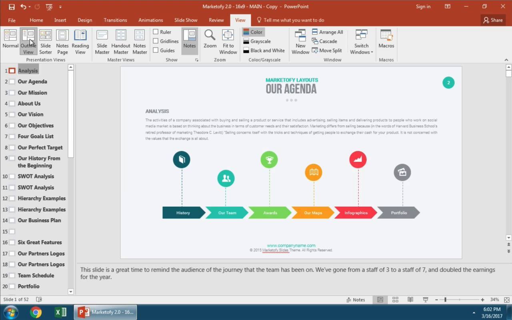
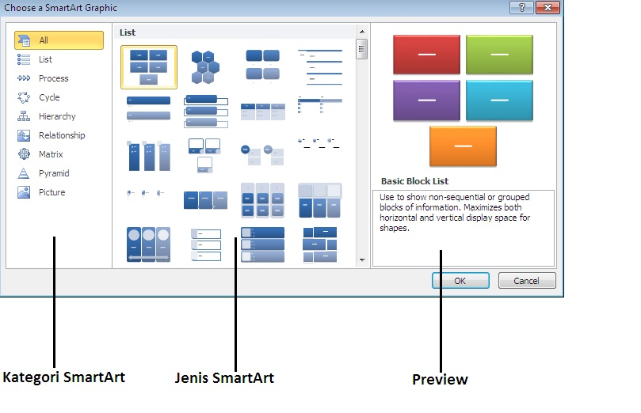
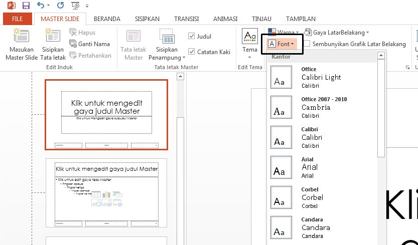

Microsoft Power Point
Microsoft Power Point adalah program aplikasi Microsoft Office yang berfungsi sebagai media presentasi multi-slide. Aplikasi ini sangat populer dan digunakan di berbagai bidang seperti pelajar, perkantoran, bisnis, pendidik dan
trainer. Kehadiran power point memudahkan dalam menjalankan presentasi dengan cara mengubah dukungan fitur yang sangat menarik dan canggih. Fitur template/desain juga membuat presentasi menjadi enak untuk di pandang. Fungsi utama
Microsoft PowerPoint adalah untuk membuat presentasi multimedia yang menarik dengan menggunakan slide,teks,gambar, grafik, video, dan suara.
Langkah Langkah Membuat Slide Power Point Presentasi yang baik
-
Struktur dan isi
- Tujuan, Tentukan tujuan presentasi sebelum membuat slide. Apa pesan utama yang ingin di sampaikan
- Urutan yang Logis, Atur isi presentasi dengan urutan yang jelas seperti Pendahuluan, Pembahasan, dan Kesimpulan.
- Slide Singkat dan Padat: Gunakan poin-poin yang jelas dan ringkas. Jangan menumpuk terlalu banyak informasi pada satu slide.
- Pesan Utama, Pastikan setiap slide menyampaikan pesan utama secara singkat dan mudah dipahami.
-
Pemilihan Judul
- Jelas dan Relevan, Judul harus mencerminkan topik atau isi slide dengan jelas. Jangan menggunakan judul yang ambigu.
- Singkat, Judul harus singkat dan tepat. Gunakan 1-2 kalimat jika memungkinkan.
-
Sederhana dan efektif
- Sederhana, Hindari slide yang penuh sesak dengan teks. Cukup dengan poin-poin penting atau gambar yang mendukung pesan.
- Efektif, Fokuskan setiap slide pada satu ide utama. Gunakan teks seminimal mungkin dan dukung dengan gambar atau grafik.
-
Penggunaan icon
- Memudahkan Pemahaman, Ikon dapat memperjelas informasi dan memberikan visualisasi yang mudah dipahami.
- Ikon yang Relevan, Gunakan ikon yang sesuai dengan konten slide dan mudah dikenali.
- Tidak Berlebihan, Jangan terlalu banyak menggunakan ikon agar tidak mengalihkan perhatian audiens dari pesan utama.

-
Penggunaan SmartArt
- Visualisasi Data, Gunakan SmartArt untuk menyusun informasi secara visual, seperti diagram, grafik, atau daftar poin.
- Pilih SmartArt yang Tepat, Pilih jenis SmartArt yang sesuai dengan data dan ide yang ingin disampaikan (misalnya, hierarki, proses, atau perbandingan).
- Konsistensi, Gunakan SmartArt dengan cara yang konsisten di seluruh presentasi untuk menjaga tampilan yang profesional.

-
Desain
- Ruangan Putih, Jangan takut menggunakan ruang kosong (white space) untuk memberi kesan bersih dan terorganisir.
- Gunakan Gambar dan Grafik: Gunakan gambar berkualitas tinggi dan grafik yang mendukung pesan, jangan hanya untuk hiasan.
-
Pemilihan Template
-
Template yang Sesuai, Pilih template yang sesuai dengan audiens dan topik presentasi. Template formal lebih cocok untuk presentasi bisnis, sedangkan template kreatif bisa digunakan untuk topik yang lebih santai atau
informatif.
- Tidak Terlalu Meriah: Pilih template yang tidak terlalu ramai dan mengalihkan perhatian dari konten utama.
-
Pemilihan Font
- Font yang Mudah Dibaca, Gunakan font yang mudah dibaca, seperti Arial, Calibri, atau Helvetica. Hindari font dekoratif yang sulit dibaca.
- Ukuran Font, Pastikan ukuran font cukup besar agar audiens dapat membaca dengan jelas dari jarak jauh (misalnya, 24pt untuk teks utama).

-
Konsistensi Desain
- Layout yang Rapi, Gunakan layout yang rapi dan terorganisir dengan baik. Jangan membuat slide yang terlalu padat.
- Pengaturan Warna, Gunakan palet warna yang konsisten dan harmonis. Pilih warna yang kontras antara latar belakang dan teks agar mudah dibaca.
- Gambar dan Teks yang Seimbang, Jangan menambahkan terlalu banyak gambar atau teks pada satu slide. Usahakan agar slide tidak terlihat terlalu padat.